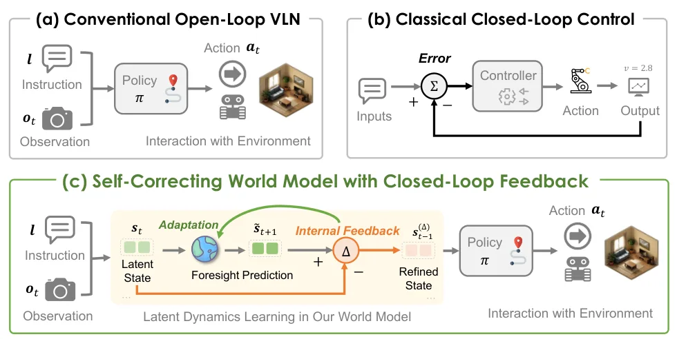
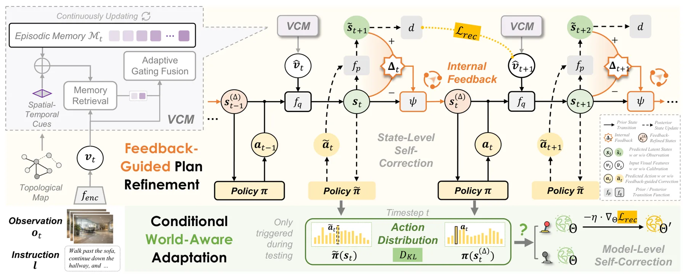
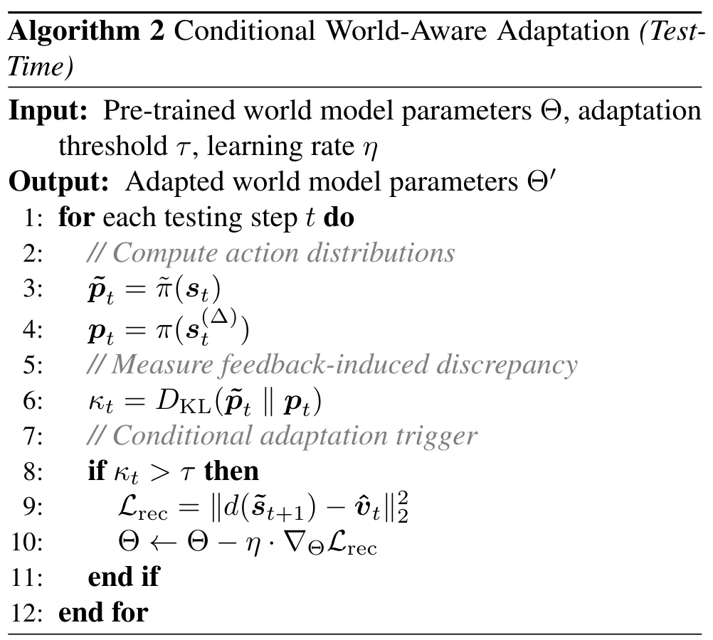
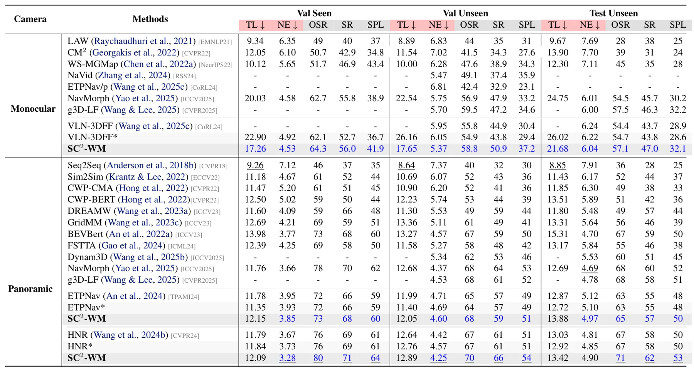
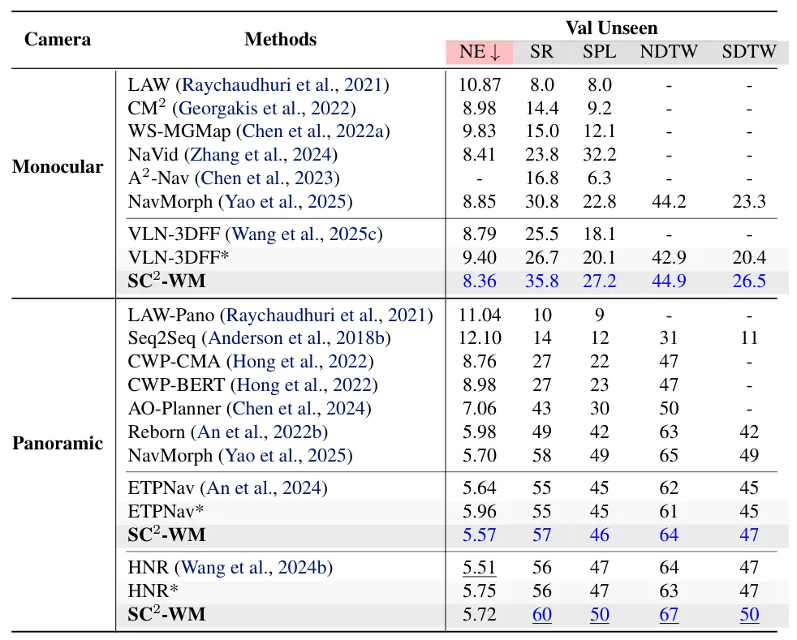
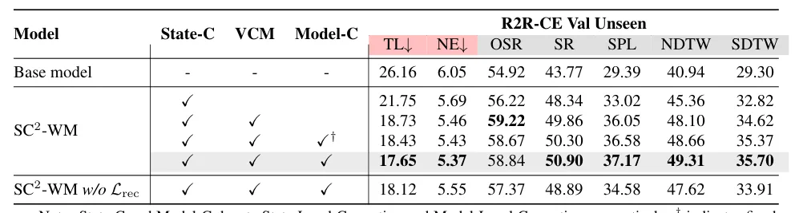

SC²-WM：连续环境视觉语言导航的闭环自纠正世界模型SC$^{2}$-WM: A Self-Correcting World Model with Closed-Loop Feedback for Vision-and-Language Navigation in Continuous Environments
闭环漂移检测和自纠正与具身导航、learned localization 相邻，且代码已公开；摘要缺少具体增益，测试时更新的延迟和稳定性待核查。
一句话工作总结
以世界模型前瞻反馈先修正计划状态，必要时再选择性执行测试时模型适配，为连续导航建立两层闭环纠错。
摘要
SC²-WM 针对连续环境视觉语言导航在部分可观测条件下采用开环执行、推理时内部状态漂移无法纠正的问题，引入世界模型内部反馈。方法利用 world-model foresight 在动作执行前进行状态级计划精化；当反馈表明模型能力不足时，再通过 conditional world-aware adaptation 选择性更新世界模型，实现模型级 test-time correction。作者称该框架在标准 VLN-CE 基准上提高了导航鲁棒性和泛化能力，并已公开代码。
Vision-and-Language Navigation in Continuous Environments (VLN-CE) requires agents to make fine-grained navigation decisions under partial observability. However, most existing methods rely on open-loop execution, lacking mechanisms to detect and correct internal state drift during inference. We propose SC$^{2}$-WM, a self-correcting world model framework that introduces internal feedback for closed-loop decision making in VLN-CE. Our method derives feedback from world-model foresight to perform state-level plan refinement before action execution. To handle challenging scenarios, we further introduce conditional world-aware adaptation, which enables model-level correction by selectively updating the world model at test time when feedback indicates model capacity insufficiency. Experiments on standard VLN-CE benchmarks demonstrate improved navigation robustness and generalization. Our code is available at https://github.com/sunrise-ikun/SC2_WM.
中文解读摘录
- 价值：针对 VLN-CE 在部分可观测条件下依赖 open-loop execution、内部状态漂移无法及时纠正的问题，引入执行前的状态级闭环反馈。
- 方法：先用 world-model foresight 评估计划并精化内部状态；当反馈表明模型能力不足时，再选择性进行 test-time world-aware adaptation，形成状态修正与模型修正两层机制。
- 关注点：闭环漂移检测思想可迁移到具身导航和 learned localization，但摘要没有给出具体增益；应重点核查 test-time update 的时延、灾难性遗忘、反馈可信度，以及真实机器人上的定位误差是否同步改善。
- 链接：arXiv · PDF · 代码
图表/页面预览
{kind=link}

{kind=link}

{kind=link}

{kind=link}

{kind=link}

{kind=link}
